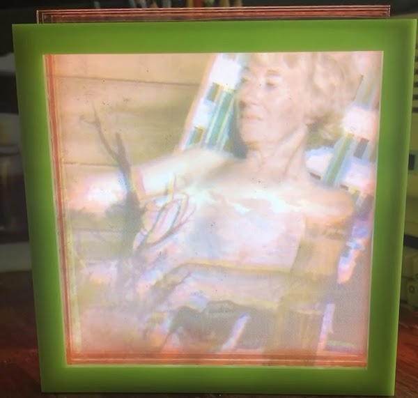

Info
I'm a Data Engineer, Time Based Media Technician and Artist. I currently work at Artsy as a Data Engineer.
I love to be busy! If you want to hire me for a freelance job, exhibit my artwork or talk about a commission email me at emma.jk.dickson@gmail.com
Work
I'm a hard worker.
Data Engineer Work
Artsy
I currently work at Artsy as a Data Engineer on the Data Platform Team. In this role I work to improve and maintain ELT pipelines. I work in close contact with the Data team and primarily in Ruby/Python.
IBM: Data Insights Squad
As a Data Scientist/Data Engineer I focused on finding ways to implement better Agile practices based on company wide tool usage.
Webrecorder
I worked at Webrecorder as a General Developer. I'm very passionate about making web archiving accessible and continue to stay close to the community.
Work
I'm a hard worker.
Conservation/Archives Work
net.flag
I was a part of the team that executed the 2019 Restoration of net.flag for the Guggenheim. Visit the restored site here!
The Electronic Literature Organization
I helped to develop and maintain the ELO's hyrax archive
BRANDON
I was a part of the team that executed the 2016-2017 Restoration of BRANDON for the Guggenheim. BRANDON is a seminal piece of net art and I'm very proud to have helped make it available to the public again. Visit the restored site here!
The David Wojnarowicz Knowledge Base
I worked as a coder and user experience test subject for the development of the Wojnarowicz Knowledge Base which you can view here.
The Nasher
I helped The Nasher perform an assessment of their Time Based Media Collection and it's condition.
The Tate
I recently performed a small assesment of a Flash piece for the Tate
Freelance
Got a project you need help with? Email me. I'm always happy to do freelance jobs.
Net Art
Mixed Connections
Mixed Connections re-combines and scrambles actual craigslist missed connections posts to explore identity and longing on the net.

Washing Machine
Washing Machine gives viewers an online cleansing ritual. Anything entered into the text box will be encoded into colors upon hitting "Wash". This stops the swimmer in their rotation. Upon hitting "Rinse" the encoded text is erased, and the swimmer continues their cycling.

New Media Art
Glitch IRL
Custom slide viewer and slide collages made from found slides.

I'm Beside Myself
“I'm Beside Myself” is an interactive installation.
Users slip on a VR headset where a camera dangles above their head and voluntarily enter a space of anxiety and removal from themselves.
Closed Circuit #1
Closed Circuit is an ongoing series of sculptures where tv's are forced to experience introspection.

Closed Circuit #2
Closed Circuit is an ongoing series of sculptures where tv's are forced to experience introspection.

Visual Synth
508 Loop Detected
508 Loop Detected Is a hardware collaboration project that resulted in a rgb based visual synth. I've used it in several local performances.
Residencies
Signal Culture Winter ToolMaker 2019
While a Toolmaker in Residence I worked with found slides and began developing a new multimodal form of SSTV in my project Dead Languages.
Satellite 2021 Fellow
Check me out here